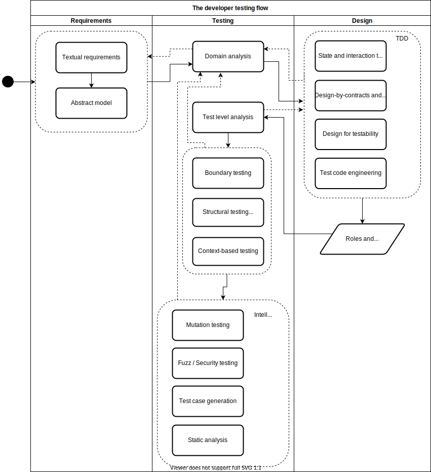

1.5 The developer testing workflow
Modern software testing is about testing and designing, designing and testing. It is only when we combine both perspectives and their respective techniques that we achieve high-quality systems.
See the workflow below:

Let us walk through the main flow (indicated by the solid dashes in the diagram):
- Any software development activity starts with requirements. These requirements are often in form of text (e.g., UML use cases, agile user stories).
- Exploring whether an abstract model can be derived might facilitate the design and the testing of the functionality later on. Common models are state machines, decision tables, activity diagrams, etc.
- Given the requirement (and maybe some abstract model), the developer then performs some initial domain analysis. The developer explores the input and output domains, and judiciously partitions the domain into a set of equivalent classes.
- With a better understanding of the domain, the developer then dives into (TDD) development cycles, with the goal of building the feature itself. In these cycles, developers:
- Use good weather/conformance tests to support the development of the feature.
- Design their classes with testability in mind. Small units are favoured in comparison to larger units.
- Think of the contracts (i.e., pre-conditions, post-conditions, and invariants) that classes/components will offer, and even automate some of them as property-based testings.
- Build enough test infrastructure to support the fast development and execution of the test cases.
- Continuously refactor production and test code.
- Perform state testing or interaction testing, according to the problem in hands. Mock objects and clear contracts play an important role in case of interaction testing.
- Go back to domain analysis whenever a deeper understanding of the requirements is necessary.
- With the new set of (apparently working) classes, the developer changes its focus to rigorous testing. The goal is clear: to find as many bugs and to devise strong test suites that would alarm them in case of regressions.
- The set of new classes (each of them with a specific architectural role and responsibility within the software system) goes through test level analysis. In other words, developers decide whether to apply unit, integration, or system testing for each of the emerged classes.
- Developers exercise the boundaries of the system (using the equivalence partitioning devised during domain analysis) as well as the structure of the produced source code (which might as well contain implementation details that were not captured by the requirements).
- The context and the test level analysis are taken into consideration, e.g., a database-related class will be exercised by means of an integration testing, or a web system will have tests for both its client side, server side, and their integration.
- With the best set of test cases, developers then rely on intelligent testing tools to complement their test cases. Mutation testing, test case generation, and static analysis tools are among the recommended intelligent testing tools. Depending on the domain, (automated) fuzz and security testing might also be leveraged.
Note that, although the diagram makes the workflow to look linear, in practice, it is extremely incremental. Based on what they learn in their current step, developers often take a step back and re-think of the decisions taken in the previous step (indicated by the dashed arrows in the diagram):
- The domain analysis might indicate problems in the requirements.
- During the design cycle, developers might observe partitions they did not see during domain analysis.
- Structural, boundary, and intelligent testing might raise questions that can only be answered through more domain analysis.
Clearly, not all steps (design or testing techniques) have to be done for each and every feature of the software system. However, the developer should explicitly analyse the trade-offs:
- Do the benefits of the technique outperform its costs? After all, some bugs are more expensive than others.
- What is the chance of the technique to reveal unforeseen bugs? As we saw, variation is important, but context is king.
In the remaining of this book, we will explore how to perform each of these techniques in a systematic and productive manner.